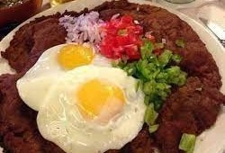
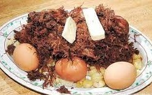

Everlasting Spring
The flavor of spring
Cochabamba
Cochabamba is in the center of Bolivia, is knowed as a valley. Do you know why Cochabamba is related with an everlasting spring? Because when is spring, the weather looks and feels like spring, when is summer, the weather looks like spring and feels like summer sometimes, when is fall, looks like fall but feels like spring, and when is winter looks like spring but feels like winter. Is like spring is present all the time, all years.
History
Cochabamba is a city and municipality in central Bolivia in a valley in the Andes mountain range. It is the fourth largest city in Bolivia, with a population of 630,587 according to the 2012 Bolivian census. Its name is from a compound of the Quechua words qucha "lake" and pampa, "open plain." Residents of the city and the surrounding areas are commonly referred to as cochalas or, more formally, cochabambinos. It is known as the "City of Eternal Spring" or "The Garden City" because of its spring-like temperatures all year round.[3] It is also known as "La Llajta," which means "town" in Quechua.
More InformationWhy We do Love Food?
As all cultures, ours is kind of particular. Bolivia is full of colors, dances, plants, and food. Food is part of our way of celebration, our way to show love, our way to show our culture and our way to gather our people.
 